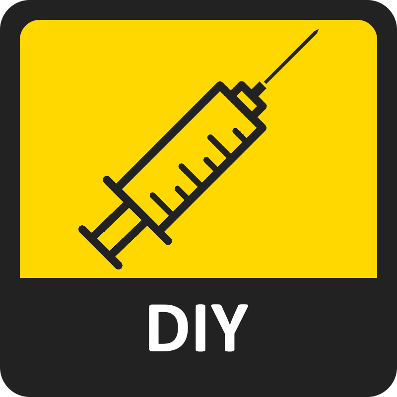
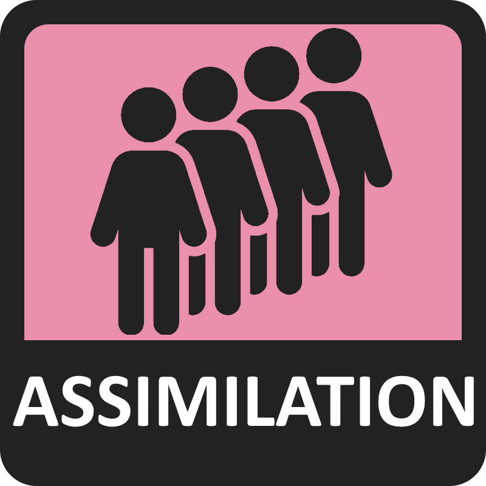
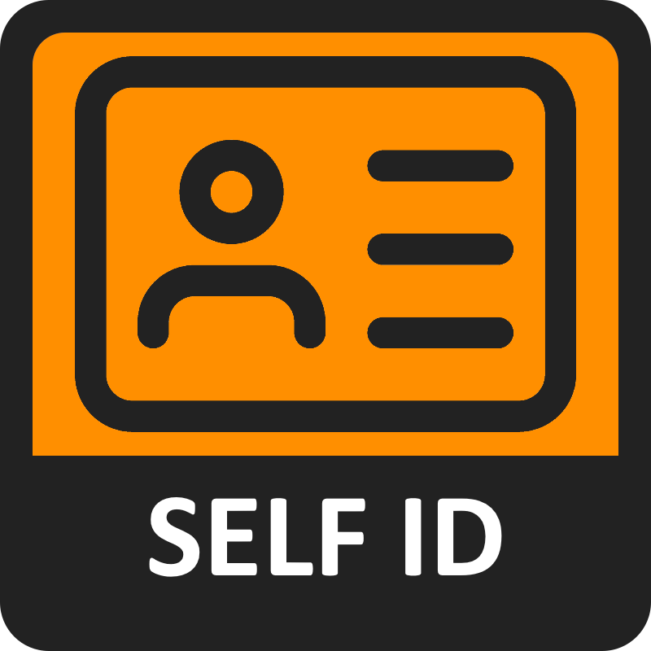
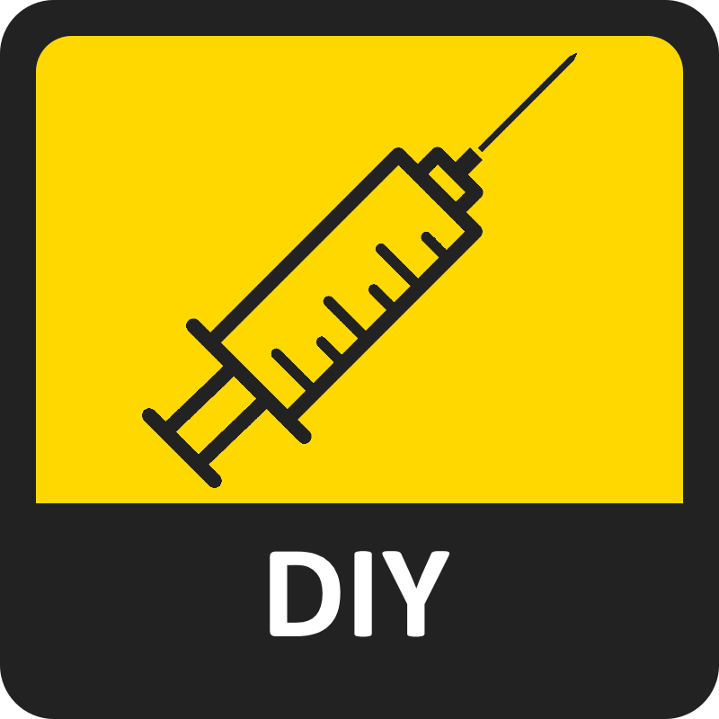
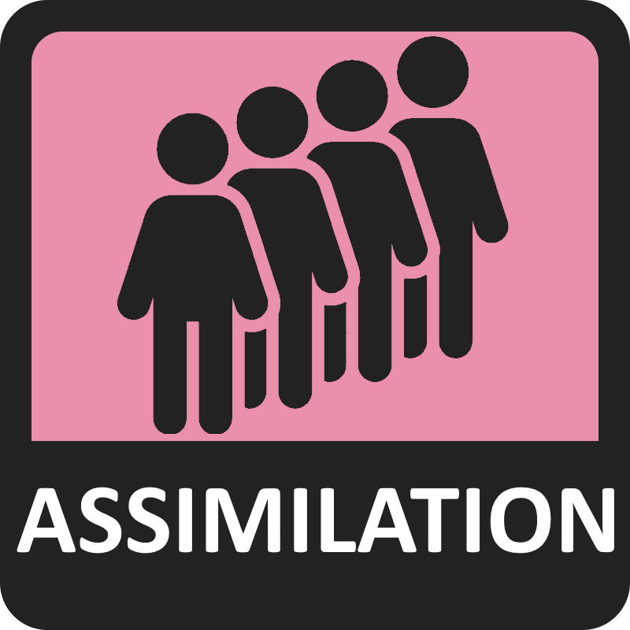
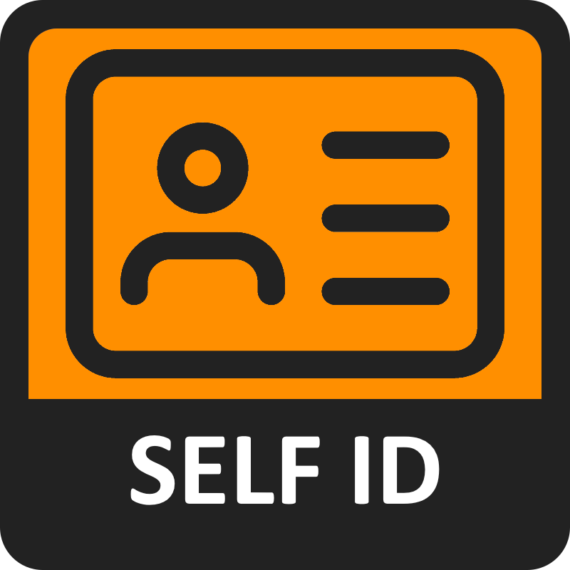

SOCIALS
TRUSCUM
HRT ACCESS
QUEER LIBERATION
 





transvalues is, in essence, a half serious shitpost quiz that attempts to assign percentages for eight different values related to trans issues.
It is generally made for trans people but cis people very familiar with trans issues can probably take it too.
You will be presented by a statement, and then you will answer with your opinion on the statement, from Strongly Agree to Strongly Disagree, with each answer slightly affecting your scores. At the end of the quiz, your answers will be compared to the maximum possible for each value, thus giving you a percentage. Answer honestly!
There are questions in the test.
this is a fork of 8values, which you can check out here